A Project can use Lookup Tables to prepopulate an app database with some (usually) static data.
A particularly convenient way of compiling and maintaining this data is by using GoogleSheets
A Lookup Table typically contains information which your app needs to make use of but which would be too laborious to enter as Lookup Items, or individual nodes in a process.
It is information which you might typically use a spreadsheet to maintain.
Let us take an example spreadsheet containing components of addresses in Tanzania (shown here).
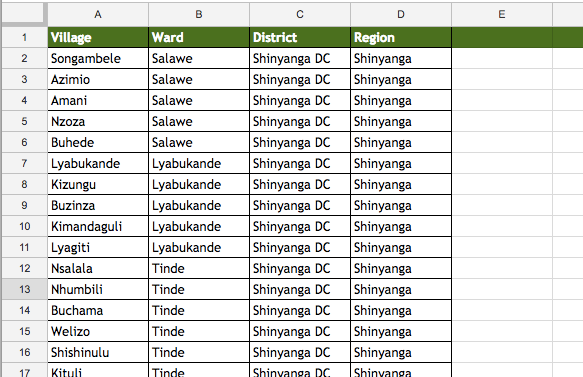
The data from a Lookup Table can be used in an app in various ways and one reason for this flexibility is that the data will be stored in the device SQLite database.
In order to achieve this database storage of the data, we need to define an Object type in Mangologic which mirrors the structure of the data in the spreadsheet. Each row of the spreadsheet will be an instance of that Object type available within Mangologic.
So now we will define the Object type we need. Let us call it address.
Now you will see the address Object Type in the list of Object Types.
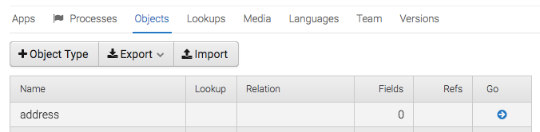
Click on the button in the "Go" column in the address row to add fields to that object.
Then select the menu option +Add -> Field
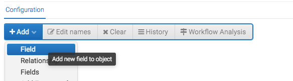
Look again at the spreadsheet - there are four fields in the data: village, ward, district, region.
You will need to add a field to the address object representing each of these columns. Make each of these fields a TEXT field. Here is what the window looks like as we are adding the first of these TEXT fields.
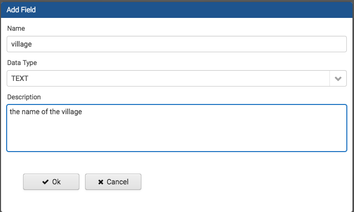
After the four fields are added, the definition of the address object should look like this: 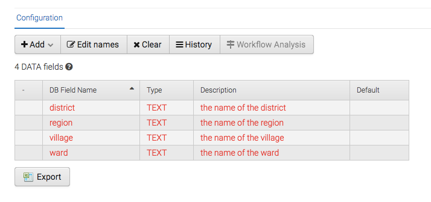
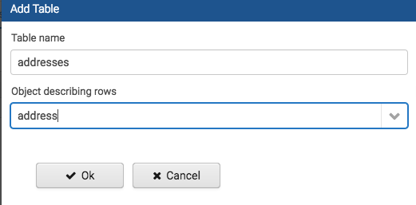
So now when you select Lookup -> Tables menu, you should see the Lookup Table defined. Of course, it has no data yet. The remaining task is to see how to get the data from the GoogleSheet into this table. 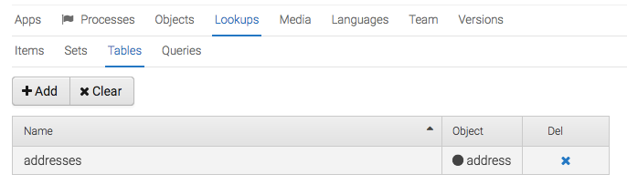
Fundamentally, we link the sheet to Mangologic by copying and pasting a "shareable link" from GoogleSheets into Mangologic. Here we explain how to get that shareable link.
When you view the google sheet, you can see the large blue SHARE button at top right. Click on that..
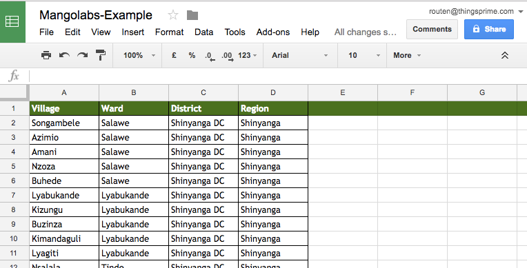
Now choose the way of sharing which is: anyone with the link can access the spreadsheet. Click Save.
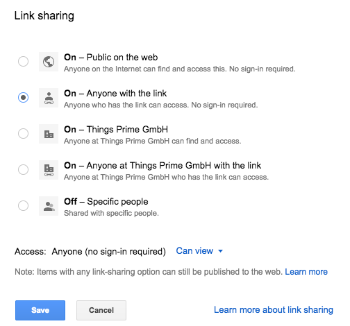
Now you can actually get the link via the "get shareable link" or "copy link" buttons. This copies into your "clipboard".
In the next step, we find out where we need to paste it into Mangologic.
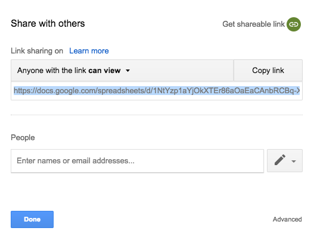
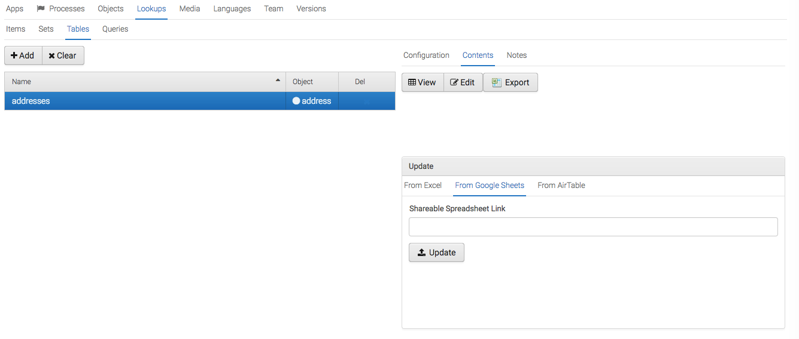
Now you can copy and paste in the Shareable GoogleSheets Link:
Clicking Update button after you have pasted the link will cause Mangologic :
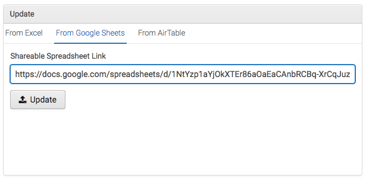
Click View Button to view the data in the table.
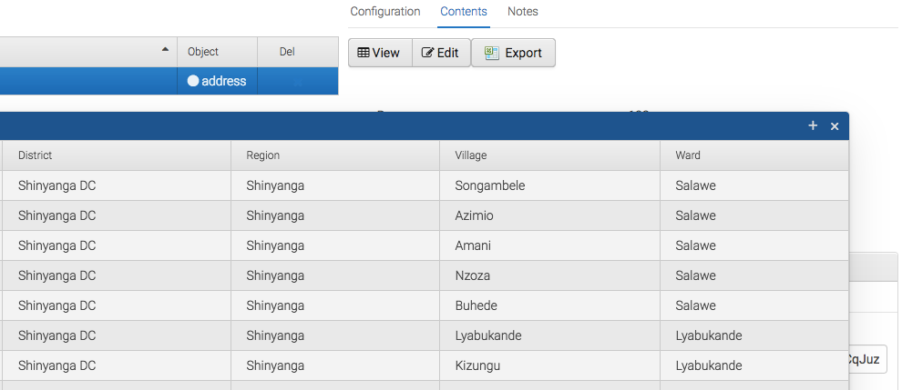If things change and you need to edit the contents of the GoogleSheet to change the data, updating the Lookup Table in your Mangologic project is extremely easy.
The only thing you have to do is to navigate to the table and click the Update button. That is it!